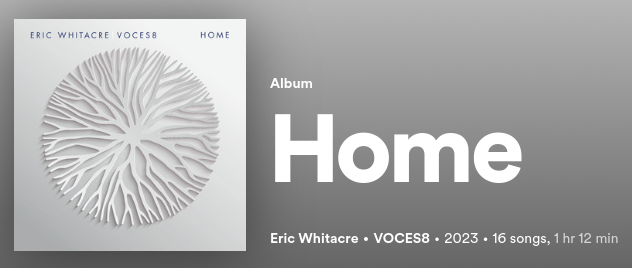
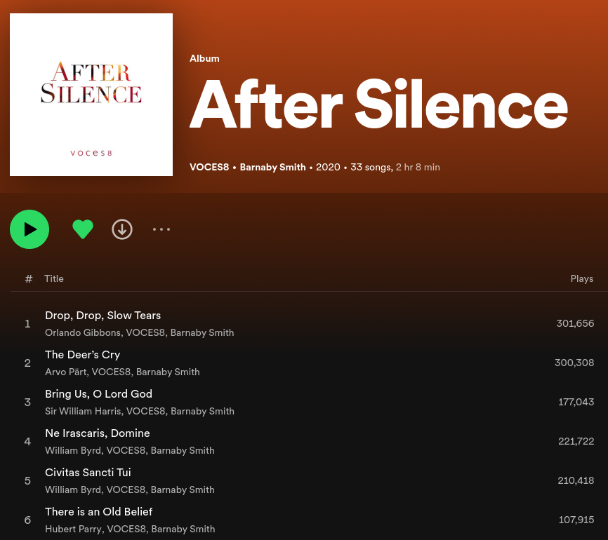

Why Travis Scott?#
A Data Science Report on My Mysterious Second Artist on my Spotify Wrapped#
Many of my friends have enjoyed heckling me in the month of December because of my Spotify Wrapped for 2023. My #1 artist was Eric Whitacre - contemporary American composer extraordinaire. My #3 artist of the month was VOCES8, my favorite elite chamber choir. Sandwiched in between these artists was my #2 artist… none other than rapper Travis Scott.
This was absolutely shocking to me and my peers. #1, choir. #3, choir. #2… a rapper that I had to Google who he was. I have zero memories of ever listening to his music, so how on Earth did he make it into my #2 artist of the entire year?
Unfortunately for my friends, I am a stats legend (ask Reeves) and I know my rights - Spotify has to give me my personal data if I ask for it. A few weeks later, and my personal Spotify data was delivered straight to my inbox. Here’s my journey looking into my Spotify data for 2023 and looking at my Travis Scott data.
NOTE: I realize that many people reading this are not super interested in the incredible details of the code, so I’ve hidden the crazy amounts of code inside functions to reduce the code-clutter throughout this article. If you are interested in the code, check out the Appendix section at the bottom of the page!
Right away let’s get some information straight - how many times did I even stream any track with Travis Scott as the artist, and which albums of his did I stream?
import pandas as pd
import matplotlib.pyplot as plt
get_travis_scott_summary_stats()
Number of times I streamed Travis Scott in 2023: 292
Platforms I streamed Travis Scott from: {'android'}
Total amount of time spent listening to Travis Scott in 2023 (in hours) 4.070261111111111
Total amount of time spent listening on Spotify in 2023 (in hours) 421.7704366666667
Albums of Travis Scott I listened to: {'UTOPIA'}
Right away we get some interesting information - 292 total streams of tracks with Travis Scott as the artist with just over 4 hours of listen time to Travis Scott alone. That’s definitely a lot of music, but considering I had roughly 400+ hours of music streamed in 2023, that’s an incredibly small percentage of time spent listening to Travis Scott.
Additionally, the only platform I listened to Travis Scott on was just android - meaning I only listened to Travis Scott on either my phone or my tablet. Either way, these are devices which I personally own, so it would be pretty hard for someone like my friends or roommates to “prank me” and play Travis Scott on my account.
Finally, I feel it’s odd that the ONLY Travis Scott album I listened to was UTOPIA, which after some quick Googling is Travis Scott’s latest full album release coming out this past summer. Since this was the only album, I thought I would see the number of times I would stream each of his individual tracks since they all would be from his latest album:
plot_travis_scott_track_stream_counts()
Now that’s incredibly weird - a fairly even distribution of streams for all his tracks. Makes me suspicious that these were autoplayed somehow without me knowing.
Speaking of, we can actually check the reason for why each of the tracks were played, as well as the reason why the track stopped being played. Here’s the bar charts for both of those statistics:
plot_reason_start_counts()
plot_reason_end_counts()
These reveal that tracks were mostly played due to fwdbtn: I would assume this means that the track beforehand was skipped. I’m not sure what the difference between playbtn and clickrow mean (I found no information from Spotify on what these mean). As for reasons why the track stopped playing, only 3 streams were due to endplay - meaning the track played all the way through and finished. Most of the tracks had the fwdbtn clicked while listening to the song - the songs were skipped! We actually can see if the track was skipped:
plot_times_travis_scott_skipped()
Sure enough - most tracks were skipped. We can also see if Shuffle was on when the track was being played:
plot_times_travis_scott_shuffled()
…hmph, shuffle was never on. Can’t blame autoplay on this then… but I still don’t remember ever seeing Travis Scott show up on my Spotify.
Since I don’t remember ever seeing this, I wanted to check exactly when I was listening to Travis Scott. The data includes exact timestamps as to when I streamed tracks. After converting to PST (my timezone) and pulling the exact hour out from that timestamp, here’s the number of times I listened to Travis Scott during certain hours in the day:
plot_hours_travis_scott_streamed()
Most common hour listening to Travis Scott? 10AM. I was in class during the 10AM hour (Joan and Chance can confirm this) so that’s absolutely mind-blowing. The second most common hour was 3AM, and while I am a late-night person, I never go to bed THAT late. I’ve got nothing to say about 9AM as I was never in class, however I was usually out at meetings or getting my personal work for other classes done with that hour. 2AM I’m also sleeping, 13 (1P) I’m either in class (again ask Joan or anyone else I took music theory with) or working in the Math Learning Center. 14 (2P) was generally my lunch hour (or class in the case of Tuesday afternoons). 19 (7PM) I was often in rehearsals or CLP. Either way, these are mostly hours that I would not be particularly active on Spotify, so it feels weird that I’m only listening to Travis Scott during these hours.
The final statistic that I wanted to look at was to compare the number of times I streamed Travis Scott and the number of times I streamed my other top artists - Eric Whitacre, VOCES8, and William Byrd. If Travis Scott was my #2 artist, then I should see some different bar heights for each artist, and I wanted to see what these bars looked like. Here’s the results of that:
plot_top_artist_streams()
Now here’s where things get super weird. Eric Whitacre runs away with 1st place - that matches with my Spotify wrapped. But William Byrd just barely beats out Travis Scott. This is weird because William Byrd was #4 and it beat out my #2 and #3. Additionally, only 7 occurrences of VOCES8 in the entire year and it was only my #3 artist? How does that make any sense at all?
One of my friends recommended that I actually compare the number of hours streamed rather than the number of total streams. This makes sense - what if William Byrd’s songs were much shorter on average than Travis Scott’s songs. Here is a new graph of my top artists based on total hours streamed:
plot_top_artist_by_minutes_streamed()
Approximately 18 hours of Eric Whitacre. Approximately 4 hours of Travis Scott. Approximately 10 hours of William Byrd. A 2.5x gap between William Byrd and Travis Scott - and let me remind you that William Byrd was #4. Something’s not adding up here. I’m only an undergraduate student that’s just messing around on his winter break, so I probably made some mistakes in my analysis. But that’s a pretty big difference between what I was able to find and what data scientists at Spotify told me at the beginning of December. There’s probably some other information that i’m not aware of that goes into Spotify wrapped. Either way, something’s off and something’s missing.
I do have a guess as to why VOCES8 is off by so much - it has to do with what artists are displayed in the data that Spotify sent me. Each track has one and only one artist. However, since VOCES8 is a choir and doesn’t sing their own music, they usually have the composer of the work listed before themselves. For example, here’s their latest album in conjunction with Eric Whitacre:

Eric Whitacre is listed as the main artist. While I absolutely love The Sacred Veil, I also listen to that album to listen/support VOCES8. However, my personal data only has Eric Whitacre listed as the artist. Here’s another example of VOCES8 from another album of theirs with older music:

As for Travis Scott still being in #2… there’s clearly other data that’s being factored into that decision in which I am unaware of. But I’m not sure what I can do to replicate that information from the data that I have presented to myself.
This was a fun couple of hours that I spent writing this up, and I hope this was an enjoyable read for you too. Maybe I made some convincing arguments about denouncing my Travis Scott love… or maybe you all will still poke fun at me when we come back in January. Either way, thanks for taking the time to read through my analyses. Feel free to leave an Issue on my GitHub repo if you want me to add some additional analyses that you would like to see :)
Appendix#
Data Cleaning and Importing#
def get_2023_data():
data = pd.read_json('spotify_data.json')
cols_to_remove = ['username', 'conn_country', 'ip_addr_decrypted', 'user_agent_decrypted', 'spotify_track_uri', 'episode_name', 'episode_show_name', 'spotify_episode_uri', 'offline', 'offline_timestamp', 'incognito_mode']
new_col_names = {'master_metadata_track_name':'track_name', 'master_metadata_album_artist_name':'artist_name', 'master_metadata_album_album_name':'album_name'}
data.drop(columns=cols_to_remove, inplace=True)
data.rename(columns=new_col_names, inplace=True)
data['skipped'] = data['skipped'].replace({1.0:True, 0.0:False})
data['ts'] = pd.to_datetime(data['ts'])
data['ts'] = data['ts'].dt.tz_convert('America/Los_Angeles')
data['hour'] = data['ts'].dt.hour
df = data[(data['ts'] >= '2023-01-01') & (data['ts'] < '2023-12-01')]
return df
def get_travvy_data():
df = get_2023_data()
travvy_df = df[df['artist_name'] == 'Travis Scott']
return travvy_df
def get_top_artists_data():
df = get_2023_data()
top_artist_df = df[df['artist_name'].isin(['Travis Scott', 'Eric Whitacre', 'VOCES8', 'William Byrd'])]
return top_artist_df
Generic Summary Statistics#
def get_travis_scott_summary_stats():
travvy_df = get_travvy_data()
df_2023 = get_2023_data()
print('Number of times I streamed Travis Scott in 2023:', len(travvy_df))
print('Platforms I streamed Travis Scott from:', set(travvy_df['platform'].values))
print('Total amount of time spent listening to Travis Scott in 2023 (in hours)', travvy_df['ms_played'].sum() / 3600000)
print('Total amount of time spent listening on Spotify in 2023 (in hours)', df_2023['ms_played'].sum() / 3600000)
print('Albums of Travis Scott I listened to:', set(travvy_df['album_name'].values))
Plotting Functions#
def plot_top_artist_streams():
top_artist_df = get_top_artists_data()
ax = top_artist_df['artist_name'].value_counts().plot(kind='bar', color='skyblue', edgecolor='black', title='Number of Times I Listened to My 2023 Top Artists', xlabel='Artists', ylabel='Number of Instances')
for p in ax.patches:
ax.annotate(str(p.get_height()), (p.get_x() + p.get_width() / 2., p.get_height()), ha='center', va='center', xytext=(0, 10), textcoords='offset points')
plt.show()
def plot_top_artist_by_minutes_streamed():
listen_time_dict = {}
df = get_top_artists_data()
artists = ['Eric Whitacre', 'Travis Scott', 'VOCES8', 'William Byrd']
for a in artists:
listen_time_dict[a] = df[df['artist_name'] == a]['ms_played'].sum() / 3600000
listen_time_dict
plt.bar(listen_time_dict.keys(), listen_time_dict.values(), color='skyblue', edgecolor='black')
plt.title('My Top Artists Based on TOTAL LISTENING TIME')
plt.xlabel('Artist')
plt.ylabel('Listen Time (hours)')
plt.show()
def plot_travis_scott_track_stream_counts():
travvy_df = get_travvy_data()
ax = travvy_df['track_name'].value_counts().plot(kind='bar', color='skyblue', edgecolor='black', title='Number of Times I Listened to Travis Scott Tracks', xlabel='Track Title', ylabel='Number of Instances')
for p in ax.patches:
ax.annotate(str(p.get_height()), (p.get_x() + p.get_width() / 2., p.get_height()), ha='center', va='center', xytext=(0, 10), textcoords='offset points')
plt.show()
def plot_hours_travis_scott_streamed():
travvy_df = get_travvy_data()
ax = travvy_df['hour'].value_counts().plot(kind='bar', color='skyblue', edgecolor='black', title='Hour of the Day I Listened to Travis Scott', xlabel='Hour (Military Time)', ylabel='Number of Instances')
for p in ax.patches:
ax.annotate(str(p.get_height()), (p.get_x() + p.get_width() / 2., p.get_height()), ha='center', va='center', xytext=(0, 10), textcoords='offset points')
plt.show()
def plot_times_travis_scott_skipped():
travvy_df = get_travvy_data()
ax = travvy_df['skipped'].value_counts().plot(kind='bar', color='skyblue', edgecolor='black', title='Number of Times I Skipped Travis Scott Songs', ylabel='Number of Instances')
for p in ax.patches:
ax.annotate(str(p.get_height()), (p.get_x() + p.get_width() / 2., p.get_height()), ha='center', va='center', xytext=(0, 10), textcoords='offset points')
plt.show()
def plot_times_travis_scott_shuffled():
travvy_df = get_travvy_data()
ax = travvy_df['shuffle'].value_counts().plot(kind='bar', color='skyblue', edgecolor='black', title='Number of Times I Skipped Travis Scott Songs', ylabel='Number of Instances')
for p in ax.patches:
ax.annotate(str(p.get_height()), (p.get_x() + p.get_width() / 2., p.get_height()), ha='center', va='center', xytext=(0, 10), textcoords='offset points')
plt.show()
def plot_reason_start_counts():
travvy_df = get_travvy_data()
ax = travvy_df['reason_start'].value_counts().plot(kind='bar', color='skyblue', edgecolor='black', title='Reasons Travis Scott Songs Were Played', ylabel='Number of Instances')
for p in ax.patches:
ax.annotate(str(p.get_height()), (p.get_x() + p.get_width() / 2., p.get_height()), ha='center', va='center', xytext=(0, 10), textcoords='offset points')
plt.show()
def plot_reason_end_counts():
travvy_df = get_travvy_data()
ax = travvy_df['reason_end'].value_counts().plot(kind='bar', color='skyblue', edgecolor='black', title='Reasons Travis Scott Songs Were Ended', ylabel='Number of Instances')
for p in ax.patches:
ax.annotate(str(p.get_height()), (p.get_x() + p.get_width() / 2., p.get_height()), ha='center', va='center', xytext=(0, 10), textcoords='offset points')
plt.show()